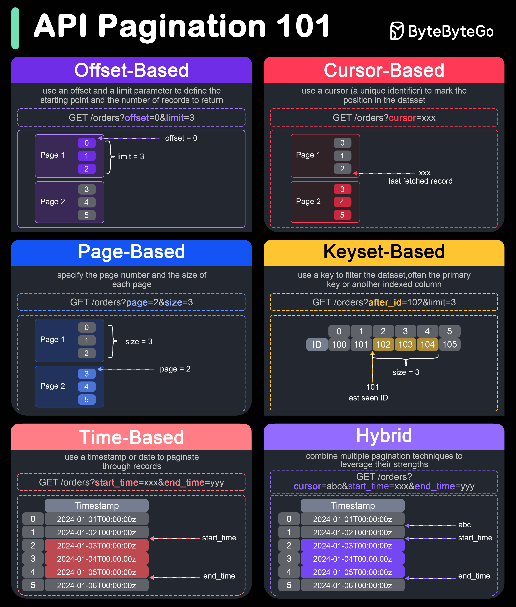
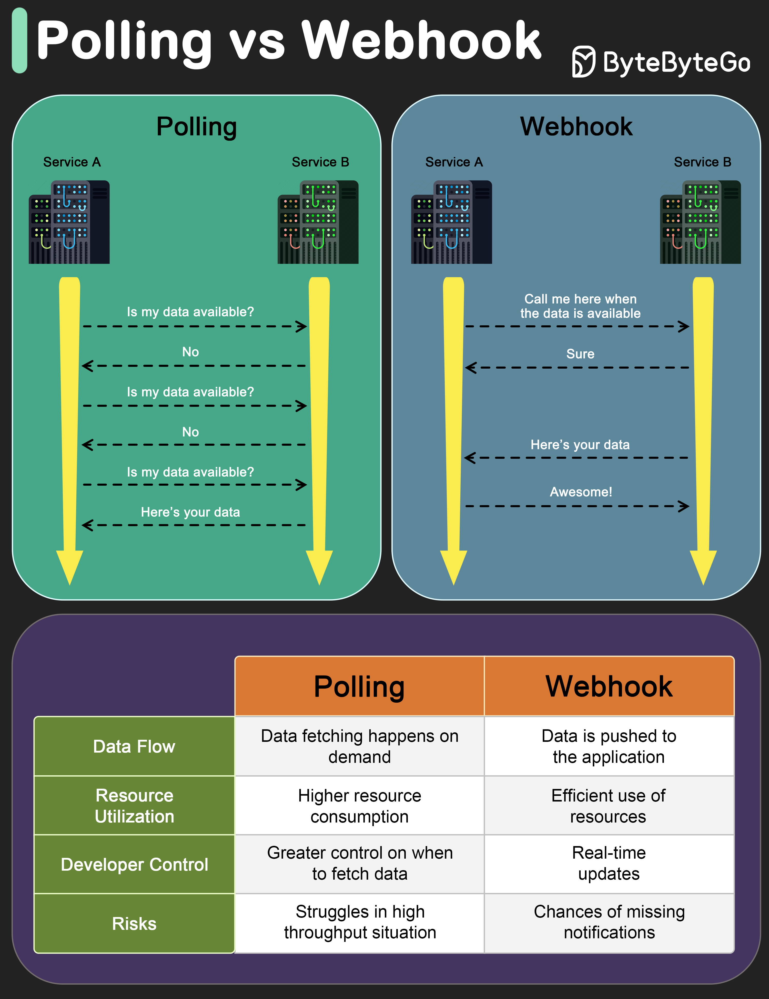
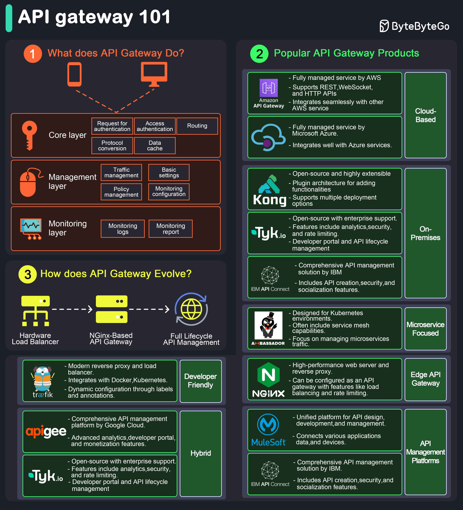

🔌 API Design
How to design APIs that are correct, reliable, and survivable over time. Rate limiting, idempotency, pagination, versioning, and webhooks — the parts that tutorials skip.
REST in Depth
REST (Representational State Transfer) is an architectural style described by Roy Fielding in his 2000 dissertation. It's not a protocol, not a standard, and not a framework — it's a set of constraints that, when applied, produce systems with desirable properties: scalability, simplicity, and evolvability. Most "REST APIs" in the wild only partially follow these constraints, which is fine — the constraints are a guide, not a checklist.
The Six Constraints (and Why They Matter)
Understanding the constraints explains why REST looks the way it does:
- Client-server separation: the client handles the UI and user state; the server handles data storage and business logic. Neither knows about the other's internals. This lets each evolve independently. Your mobile app and web app can have different UIs while hitting the same API.
- Stateless: every request must contain all the information needed to process it. The server keeps no session state between requests. This is why you send a JWT or API key on every request rather than logging in once. Statelessness is what makes horizontal scaling easy — any server instance can handle any request.
- Cacheable: responses must label themselves as cacheable or not. This enables intermediate caches (CDNs, reverse proxies) to serve responses without hitting your origin. A GET
/products/123response withCache-Control: max-age=3600can be served by Cloudflare for an hour without touching your database. - Uniform interface: the defining constraint. Resources are identified by URIs. You manipulate resources through their representations (JSON, XML). Messages are self-descriptive (method + headers + body carry all context). This is why REST APIs feel familiar regardless of what they do — the interface convention is universal.
- Layered system: the client doesn't know if it's talking directly to the server or to a proxy, load balancer, or CDN. Intermediaries are transparent. This enables you to insert caches, API gateways, and security layers without changing the client.
- Code on demand (optional): the server can send executable code to the client. JavaScript in browsers is the only practical example. Almost never relevant for backend APIs.
Resource Naming
Resources are nouns. URLs identify things, not actions. The HTTP method is the verb.
// Good — nouns, hierarchical, plural collections
GET /users // list users
POST /users // create a user
GET /users/123 // get user 123
PUT /users/123 // replace user 123
PATCH /users/123 // partially update user 123
DELETE /users/123 // delete user 123
GET /users/123/orders // orders belonging to user 123
POST /users/123/orders // create an order for user 123
// Bad — verbs in URLs (this is RPC style, not REST)
POST /getUser
POST /createOrder
POST /deleteAccount?id=123Use plural nouns (/users, not /user). Keep hierarchies shallow — more than two levels (/users/123/orders/456/items) becomes unwieldy. If a resource relationship is complex, consider flattening: /order-items/789 instead.
HTTP Methods — The Semantics Matter
Each HTTP method carries a contract. Violating it breaks clients, caches, and tools:
- GET: safe (no side effects) and idempotent. Always cacheable. Never use GET for operations that change state — search engines and link prefetchers will trigger them.
- POST: creates a new resource or triggers an action. Not idempotent — calling twice creates two resources. Returns
201 Createdwith aLocation: /users/456header pointing to the new resource. - PUT: replaces a resource entirely. Idempotent — calling ten times has the same result as calling once. The client must send the complete representation, not just changed fields. Missing fields are treated as null/removed.
- PATCH: partial update — only the fields in the body are changed. Semantically correct for "update just the email address." Whether it's idempotent depends on your implementation — a PATCH that sets a field to a value is idempotent; one that increments a counter is not.
- DELETE: removes a resource. Idempotent — deleting something already deleted should return
404or204. Both are defensible; pick one and be consistent.
Consistent Error Responses
Your error format is part of your API contract. Inconsistent errors are one of the most common API usability problems — clients have to handle each error differently. Pick one error shape and use it everywhere:
// A good error envelope — machine-readable code + human message
{
"error": {
"code": "VALIDATION_FAILED", // snake_case, stable, used in code
"message": "Email is invalid", // human-readable, for logs/UX
"field": "email", // optional: which field failed
"request_id": "req_9KxQ2hj" // trace ID for support
}
}
// Use the right HTTP status code too:
// 400 Bad Request — client sent invalid data
// 401 Unauthorized — missing or invalid authentication
// 403 Forbidden — authenticated but not authorized
// 404 Not Found — resource doesn't exist
// 409 Conflict — optimistic lock conflict, duplicate key
// 422 Unprocessable — valid JSON but semantically wrong
// 429 Too Many Requests — rate limited
// 500 Internal Error — your bug, client shouldn't retry logicAPI Documentation as a Contract
An undocumented API is a liability. Document with OpenAPI (formerly Swagger) — it's a YAML/JSON schema that describes every endpoint, parameter, request body, and response. Benefits beyond documentation: client SDK generation (every major language has generators), request validation middleware, mock servers for testing, and Swagger UI for interactive exploration. Write your OpenAPI spec as part of the design process, not after — it forces you to make decisions about naming and shape before writing a line of code.
Rate Limiting
Rate limiting controls how many requests a client can make in a given time window. It serves three purposes: preventing abuse (a single client can't DoS your service), ensuring fairness (one heavy user can't starve others), and enforcing business rules (free tier: 100 requests/day, paid tier: 10,000/day). The algorithm you choose affects behavior under burst traffic — understanding the tradeoffs determines whether your system degrades gracefully or fails suddenly.
Fixed Window Counter
The simplest algorithm. Divide time into fixed windows (e.g., 1-minute intervals). For each client, keep a counter that resets at window boundaries.
// Allow 100 requests per minute
// Window starts at :00, resets at :01:00
function isAllowed(userId):
key = userId + ":" + floor(now / 60) // "user123:28434880"
count = redis.incr(key)
redis.expire(key, 60)
return count <= 100The flaw: burst at window boundaries. A client sends 100 requests at 12:00:59 (last second of window 1) then 100 requests at 12:01:00 (first second of window 2). In two seconds they've made 200 requests — double the limit — and both windows show exactly 100. This is exploitable by anyone who knows your window boundaries.
Sliding Window Log
Store a timestamp for each request in a sorted set (Redis ZSET). To check: count entries within the past 60 seconds; if under limit, allow and add current timestamp; if over, reject.
function isAllowed(userId):
now = currentTimestamp()
window_start = now - 60_000 // 60 seconds ago in ms
redis.zremrangebyscore(userId, 0, window_start) // remove old entries
count = redis.zcard(userId)
if count < 100:
redis.zadd(userId, now, now) // score=timestamp, member=timestamp
redis.expire(userId, 60)
return true
return falsePerfectly accurate — no boundary burst problem. The window slides with every request. Downside: O(n) memory per user (stores every recent request timestamp). For a limit of 10,000 requests/minute per user, that's 10,000 entries in Redis per active user. Impractical at scale.
Sliding Window Counter
The practical algorithm — a hybrid that approximates the sliding window with O(1) space. Keep only two counters: the current window's count and the previous window's count. Estimate the rolling count using a weighted sum:
rate = prev_count * (1 - elapsed/window_size) + curr_count
// Example: window = 60s, limit = 100
// Previous window count: 80
// Current window started 15 seconds ago (elapsed = 15s)
// Current window count: 30
rate = 80 * (1 - 15/60) + 30
= 80 * 0.75 + 30
= 60 + 30 = 90 ✓ allowed (< 100)The approximation assumes the previous window's requests were evenly distributed — not perfectly accurate but accurate enough. Cloudflare published that this approach was within 0.003% of the true count in their testing. Only 2 counters in Redis per user per window. This is the algorithm to reach for first.
Token Bucket
Each user gets a bucket that holds up to B tokens. Tokens replenish at rate R per second. Each request consumes one token. If the bucket is empty, the request is rejected or queued.
// Bucket capacity: 10 tokens, refill rate: 1 token/second
// Allows bursts: a user with a full bucket can fire 10 requests instantly
// Then: sustained rate of 1 request/secondToken bucket is the right choice when you want to allow short bursts while controlling average rate. AWS API Gateway and many payment APIs use it. The burst allowance is a feature — a user who hasn't made requests for a while has accumulated tokens and can make a burst of requests. Leaky bucket is the inverse: requests queue and drain at a fixed rate, smoothing all bursts. Use leaky bucket when you need a guaranteed steady outbound rate (e.g., calling a third-party API that has strict rate limits).
Implementation: Where and How
Rate limiting should happen at the edge — API gateway or reverse proxy — so requests are rejected before reaching your application. For distributed rate limiting (multiple gateway instances), state lives in Redis. A naive Redis implementation races on read-increment-write, so use a Lua script (executed atomically) or Redis 7's INCR + EXPIRE pattern.
Rate limit on multiple dimensions: per IP (bot/DDoS protection), per user/token (fairness, tier enforcement), per endpoint (protect expensive endpoints separately), globally (total system capacity). A sophisticated system combines all four.
Tell clients what happened with standard headers:
HTTP/1.1 429 Too Many Requests
X-RateLimit-Limit: 100 // requests allowed per window
X-RateLimit-Remaining: 0 // requests left in current window
X-RateLimit-Reset: 1712000060 // Unix timestamp when window resets
Retry-After: 42 // seconds until client can retryAlways return Retry-After. Clients that respect it back off automatically; clients that don't get further rate limited. Without it, aggressive clients will retry immediately and double their load on your service.
Idempotency & Reliability
An operation is idempotent if calling it multiple times produces the same result as calling it once. The formal definition: f(f(x)) = f(x). This property matters because in distributed systems, you can't always know if a request succeeded. Networks time out. Servers crash after processing but before responding. The client's only safe option is to retry — and retrying a non-idempotent operation causes duplicates.
The Double-Charge Problem
A user clicks "Pay" on a checkout page. Your client sends a POST to /payments. The server receives the request, charges the credit card, and then — before it can respond — the server process crashes. The client receives a network timeout. Should it retry?
If yes: the server might process it again and charge the card twice. If no: the client has no confirmation and the user thinks the payment failed, even though their card was charged. This is the double-charge problem, and it's the canonical reason idempotency keys exist.

Idempotency Keys
The solution: the client generates a unique key for the operation and sends it with the request. The server stores the result the first time it processes the key. If it sees the same key again, it returns the stored result without processing again.
// Client generates a UUID before making the request
const idempotencyKey = crypto.randomUUID(); // "f47ac10b-58cc-4372-a567-0e02b2c3d479"
// Sent with the request
POST /payments
Idempotency-Key: f47ac10b-58cc-4372-a567-0e02b2c3d479
Content-Type: application/json
{ "amount": 4999, "currency": "usd", "card_token": "tok_visa" }// Server implementation
async function processPayment(request):
key = request.headers["Idempotency-Key"]
// Check if we've seen this key before
cached = await redis.get("idem:" + key)
if cached:
return JSON.parse(cached) // return the original response, don't reprocess
// First time — process the payment
result = await chargeCard(request.body)
// Store the result with a TTL (Stripe uses 24 hours, many use 7 days)
await redis.setex("idem:" + key, 86400, JSON.stringify(result))
return resultKey implementation details: the idempotency key must be scoped to the operation type and client — the same UUID shouldn't be reusable for different operations. Store the full response, not just a success flag — the client needs to receive the original response body on retries. Set a TTL (Stripe uses 24 hours; 7 days is safer for most use cases). If the first attempt is still in progress when a retry arrives, return 409 Conflict so the client knows to wait rather than assume it failed.
Which Operations Need Idempotency Keys
HTTP gives you idempotency for free on GET, PUT, and DELETE — the semantics guarantee it. The operations that need explicit idempotency key support are non-idempotent POSTs that have real-world side effects:
- Payment charges: the canonical example. Every payment provider (Stripe, Adyen, PayPal) supports idempotency keys.
- Sending email or SMS: retrying without deduplication sends duplicates to users.
- Order creation: retry creates a second order.
- Provisioning resources: retry creates a second VM, database, or user account.
- Publishing to external systems: webhook deliveries, third-party API calls.
The rule of thumb: any POST that creates a resource or triggers a real-world side effect should support idempotency keys. Put the burden on the server to deduplicate — not on the client to not retry.
Idempotency vs. At-Least-Once
Message queues deliver at-least-once by default. Your consumer will process the same message more than once — guaranteed over any long enough time period. The solution is the same: make your consumer idempotent. Store processed message IDs (or a derived deduplication key) in Redis or your database. Check before processing. This is not optional if you care about correctness.
Pagination Strategies
Any endpoint that returns a collection needs pagination. Returning all records in a single response doesn't scale — a table with 10 million rows can't be serialized into a single HTTP response. The question is which pagination strategy to use, because the wrong choice creates performance problems and data consistency bugs that only appear at scale.
Offset Pagination — The Obvious Approach That Breaks at Scale
The most intuitive approach: skip N records, return M records.
GET /orders?offset=0&limit=20 // page 1
GET /orders?offset=20&limit=20 // page 2
GET /orders?offset=40&limit=20 // page 3
-- SQL translation
SELECT * FROM orders ORDER BY created_at DESC LIMIT 20 OFFSET 40;The problem becomes clear at scale. OFFSET 100000 LIMIT 20 doesn't skip 100,000 rows cheaply — the database scans through all 100,000 rows and discards them, then returns the next 20. At offset 1 million, your query takes seconds even on an indexed column. The other problem: if a new record is inserted while a user is paginating, every record shifts by one position — page 2 will contain a duplicate of page 1's last record, or skip a record entirely. This is the "phantom read" problem at the pagination layer.
Cursor-Based Pagination — The Right Default for APIs
Instead of a numeric offset, use an opaque cursor — an encoded pointer to the position in the result set. The cursor is returned by the server; the client passes it back on the next request.
// First request — no cursor
GET /orders?limit=20
{
"data": [...],
"pagination": {
"next_cursor": "eyJpZCI6MjAsImNyZWF0ZWRfYXQiOiIyMDI0In0=",
"has_more": true
}
}
// Next page — pass the cursor
GET /orders?limit=20&cursor=eyJpZCI6MjAsImNyZWF0ZWRfYXQiOiIyMDI0In0=The cursor is typically a base64-encoded JSON object containing the last-seen record's ID and/or timestamp. The server decodes it and uses it to build a WHERE clause. Clients treat it as opaque — they never parse or construct cursors, they just pass them back. This decouples your internal pagination logic from the API contract.
The cursor approach is stable: new inserts don't shift positions because you're not using a position at all — you're using a record identity. No duplicate records, no skipped records.
Keyset Pagination — The Performant Implementation
Keyset pagination (also called the "seek method") is how cursor-based pagination is typically implemented under the hood. Instead of OFFSET, use a WHERE clause with the last-seen key:
-- Offset (slow at scale): scans and discards 100,000 rows
SELECT * FROM orders ORDER BY id DESC LIMIT 20 OFFSET 100000;
-- Keyset (fast always): starts at the index entry for id=900000
SELECT * FROM orders WHERE id < 900000 ORDER BY id DESC LIMIT 20;The WHERE id < :last_id query uses the B-tree index directly — it starts at the right position and reads forward. It's O(log n + page_size) rather than O(offset + page_size). At 10 million records with offset 999980, keyset pagination is 50,000× faster. The tradeoff: you can't jump to an arbitrary page number ("go to page 500") — you can only go forward and backward sequentially. For most use cases (infinite scroll, feeds, API consumers paginating through records), this is fine.

Time-Based Pagination
For time-series data — events, logs, transactions, messages — paginate by timestamp range rather than by position:
GET /events?start_time=2024-01-01T00:00:00Z&end_time=2024-01-01T01:00:00Z&limit=100This is natural for data that's logically partitioned by time. It avoids the "new records shift positions" problem: if new events arrive during pagination, they have newer timestamps and don't affect the time range you're querying. Combine with keyset pagination within a time window for efficiency.
Should You Return a Total Count?
Many pagination implementations return a total record count: "total": 1482050. This seems useful for "page X of Y" UI and progress indicators. The problem: SELECT COUNT(*) on a large table is expensive — it triggers a sequential scan or index scan across all matching rows. For a table with 10 million records filtered by several conditions, this adds 100–500ms to every paginated request. If your UI doesn't need a total count, don't compute it. If it does, compute it asynchronously or cache it. Never run COUNT(*) on every pagination request for large tables.
Versioning & Webhooks
APIs that live in production acquire consumers. Once consumers exist, changes are risky — a field rename, a behavior change, or a removed endpoint can silently break another team's service or a user's integration. Versioning and backward compatibility strategy determine how gracefully your API evolves. Webhooks are the push equivalent of API calls — understanding their design is equally important.
Breaking vs. Non-Breaking Changes
Most API changes don't require a new version. Understanding which changes are safe prevents unnecessary versioning churn:
- Non-breaking (backward compatible): adding new optional fields to a response, adding new endpoints, adding new optional request parameters, relaxing validation rules. Old clients ignore new fields; existing endpoints still work.
- Breaking: removing a field or endpoint, renaming a field, changing a field's type, changing required fields, changing behavior of an existing operation, changing authentication schemes, changing error codes that clients parse.
Postel's Law applies: "be conservative in what you send, liberal in what you accept." Design your API to tolerate unexpected fields from clients and be careful about removing fields from responses. A good rule: once a field is in a response, treat it as permanent. Deprecate first (add a deprecated: true flag in your API docs and a Deprecation response header), keep it for at least one major version, then remove it.
Versioning Strategies
When you do need a new version, there are three main approaches:
// 1. URL versioning — most common, most discoverable
GET /v1/users/123
GET /v2/users/123
// 2. Header versioning — cleaner URLs, harder to test/cache
GET /users/123
Accept: application/vnd.myapi.v2+json
// or:
API-Version: 2024-01-15
// 3. Query parameter — simple but pollutes URLs
GET /users/123?version=2URL versioning is the pragmatic choice: it's visible in logs, curl-able in a browser, easy to route in a load balancer, and cacheable at the CDN level. Header versioning is cleaner and more "correct" per REST semantics (the URL identifies the resource, not the version of the representation), but it makes APIs harder to test and the version is invisible in logs. Stripe uses a date-based versioning scheme — each API version is identified by a YYYY-MM-DD date, and your account is pinned to the version active when you created it. New features are additive; breaking changes require opting into a new version explicitly.
Webhooks — Event-Driven Delivery
A webhook is the inverse of an API call. Instead of your client polling GET /payment/123/status repeatedly, you register a URL with the server and it sends you an HTTP POST when something happens. Polling is wasteful: if a payment takes 3 minutes to process and you poll every 5 seconds, you make 36 requests to get one answer. Webhooks eliminate the polling loop entirely.
// You register a webhook endpoint with the payment provider:
POST /webhooks
{ "url": "https://yourservice.com/hooks/payment", "events": ["payment.succeeded", "payment.failed"] }
// Provider sends POST to your URL when the event occurs:
POST https://yourservice.com/hooks/payment
Content-Type: application/json
Stripe-Signature: t=1712000000,v1=5257a869e7ecebeda32affa62cdca3fa...
{
"id": "evt_1234",
"type": "payment.succeeded",
"data": { "object": { "id": "pay_5678", "amount": 4999, "status": "succeeded" } }
}
Webhook Reliability — The Hard Parts
Webhooks have a fundamental delivery problem: the provider is calling your endpoint over the public internet. Your endpoint might be down, slow, or returning errors. Well-designed webhook systems handle this:
- At-least-once delivery: if your endpoint doesn't return
2xxwithin a timeout (typically 5–30 seconds), the provider retries. Your endpoint will receive duplicate events — it must be idempotent. Use the event ID for deduplication. - Respond fast, process async: your webhook endpoint should acknowledge receipt immediately (
200 OK) and process asynchronously. Doing heavy work synchronously risks timing out and triggering a retry. Write the event to a queue or database, return 200, process in a background worker. - Retry with backoff: providers retry on failure, typically with exponential backoff over hours or days. Stripe retries for 3 days with increasing intervals. Know how long your provider retries and what happens after that — some discard events, some disable your endpoint.
Webhook Security — Signature Verification
Anyone who knows your webhook URL can POST to it. Without verification, an attacker can send fake payment success events to your endpoint. Always verify the signature:
// Provider signs the payload with your webhook secret (HMAC-SHA256)
// You verify it on receipt
function verifyWebhook(body, signatureHeader, secret):
// Stripe format: "t=timestamp,v1=signature"
parts = signatureHeader.split(",")
timestamp = parts[0].split("=")[1]
signature = parts[1].split("=")[1]
// Compute expected signature
payload = timestamp + "." + body
expected = hmacSHA256(payload, secret)
// Timing-safe comparison (prevents timing attacks)
if not timingSafeEqual(expected, signature):
throw new Error("Invalid signature")
// Reject stale events (prevents replay attacks)
if abs(now() - int(timestamp)) > 300: // 5 minute tolerance
throw new Error("Stale event")The timestamp in the signature prevents replay attacks — an attacker can't capture a valid webhook and replay it later because the timestamp check will reject it. Always use a timing-safe comparison for the HMAC (not ===) — standard string equality leaks timing information that can be used to brute-force the signature byte by byte.
API Gateway Patterns
An API gateway is the front door of your microservices system. It handles concerns that would otherwise need to be implemented in every service: authentication (validate JWT once at the gateway, pass identity downstream), rate limiting (applied before any service sees the request), routing (path-based or header-based to the right service), protocol translation (REST at the gateway edge, gRPC between internal services), and request/response transformation (aggregate multiple service responses into one client response).

The distinction between an API gateway, a load balancer, and a reverse proxy is one of scope: a reverse proxy forwards requests and handles SSL; a load balancer distributes traffic across instances; an API gateway operates at the application layer and understands your API semantics (routes, auth tokens, request shapes). In practice the boundaries blur — AWS ALB can do some gateway functions, and Kong (a gateway) also does load balancing. Choose based on what decisions your team needs to centralize.